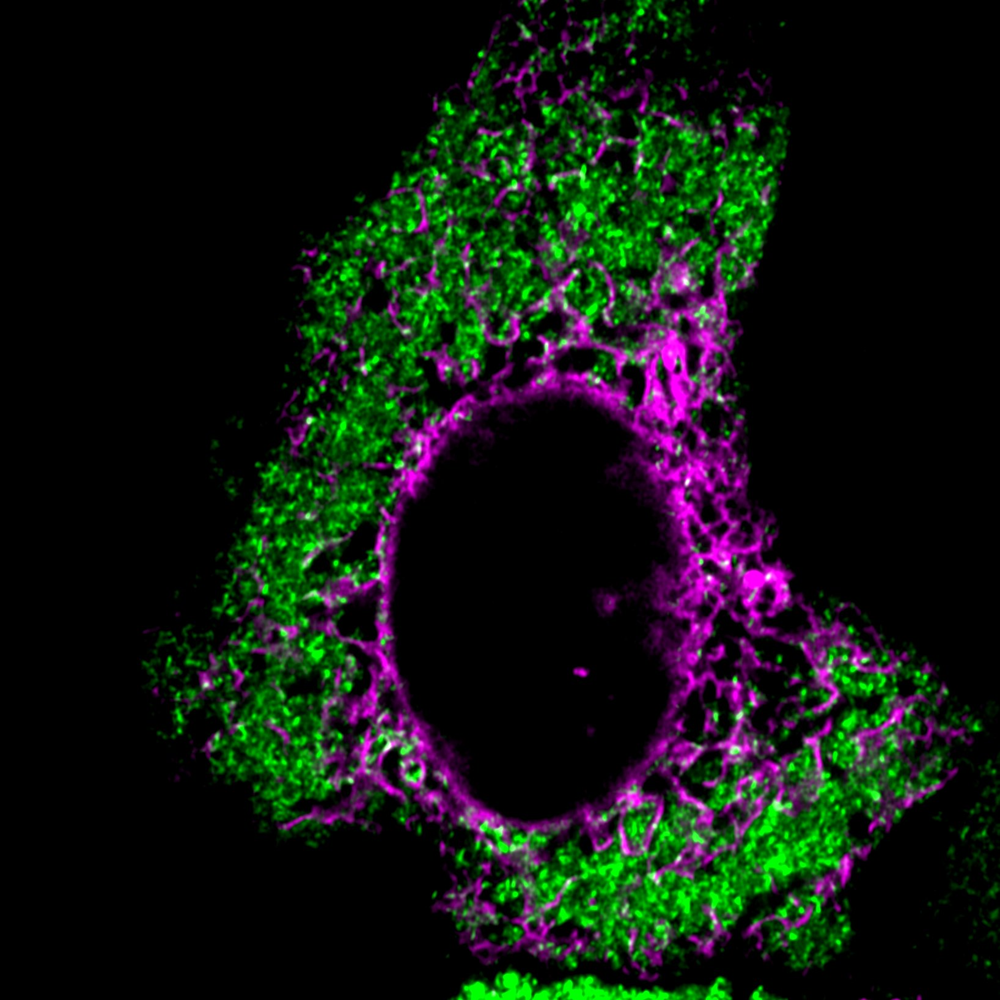
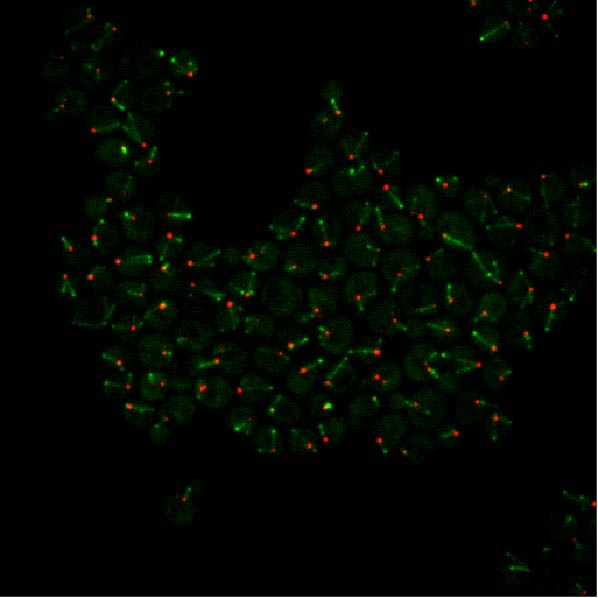

The interplay between membrane-bound and membraneless compartments
A hallmark of eukaryotic cells is the ability to compartmentalize essential reactions into membrane-bound and membraneless organelles. The two types of compartments coexist in the cytoplasm, but whether and how they communicate, cooperate, or exchange materials is unknown. I identified a family of adaptor proteins that bring the two types of compartments together. I am applying cutting-edge imaging and biochemical approaches to obtain insights and conceptual advances on this topic. I am interested in exploring this topic further in live animals.
Cytoplasmic compartmentalization by membraneless organelles
The FXR1 network (green) and the endoplasmic reticulon (magenta) in a HeLa cell. Enzymatic reactions rely on the proximity between enzymes and substrates. When the reaction product is needed immediately, how do enzymes and substrates locate each other rapidly in the crowded cellular milieu? I discovered a cytoplasmic condensate network called the FXR1 network, a membraneless compartment assembled by the longest ~1000 mRNAs expressed in cells and the RNA-binding protein FXR1. The FXR1 network acts as a signaling scaffold for RhoA-activated actomyosin reorganization by providing proximity between Rho-activated kinases and their substrate non-muscle myosin II. This work demonstrated for the first time that mRNAs have structural function in the cytoplasm beyond translation.
I am interested in studying how the insights generated in this work can help understand the molecular biology of Fragile X Syndrome, the most common form of hereditary intellectual impairment in humans.
Relevant publications:
Chen, X. et al. bioRxiv (2023)
Horste, E. et al. in press Mol Cell (2023)
Chen, X. & Mayr, C. RNA (2022)
Differentiation of microtubules
Cytoplasmic microtubules (green) and centrosomes (red) in budding yeast. During my Ph.D., I investigated the mechanisms of how centrosomes drive microtubule differentiation. I developed a high-throughput quantitative microscopy framework to quantify three-dimensional yeast microtubule dynamics with high spatiotemporal resolution. Using this framework, I discovered that yeast centrosomes use a kinesin motor protein as a messenger to remotely control the behavior and function of microtubules emanating from them.
Relevant publications:
Lengefeld, J. et al. Mol Biol Cell (2018)
Stangier, M. M. et al. Structure (2018)
Chen, X. et al. Elife (2019)
Chen, X. et al. J Cell Biol (2023)
Inheritance of epigenetic information over cell division
During my master’s, using quantitative mass spectrometry, I investigated how epigenetic information is inherited over cell division. I demonstrated that histone modifications do not require templates within the same nucleosome in large heterochromatic regions.
Relevant publications: Xu, M. et al. Science (2010) Chen, X. et al. EMBO Prep (2011) Wu, H. et al. Cell Res (2011)